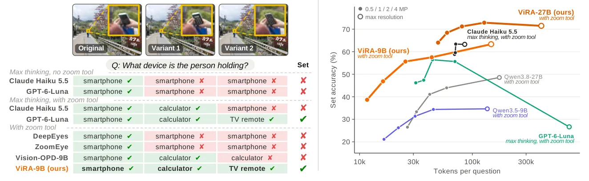
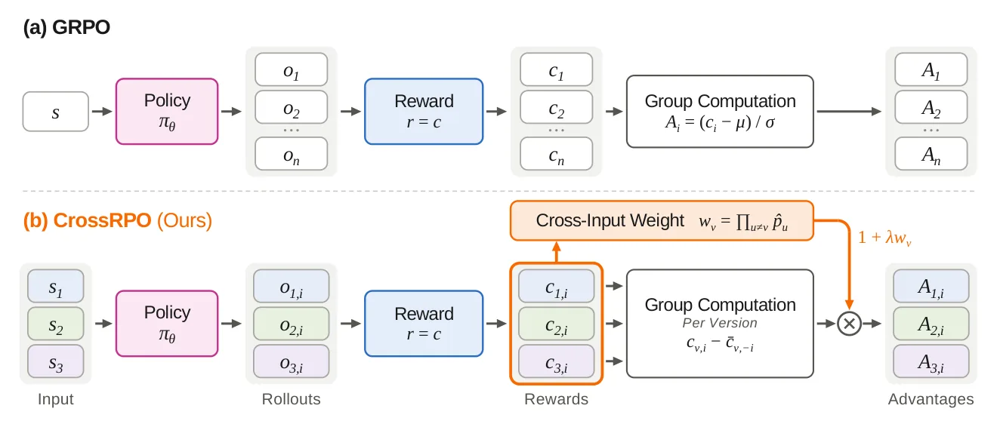
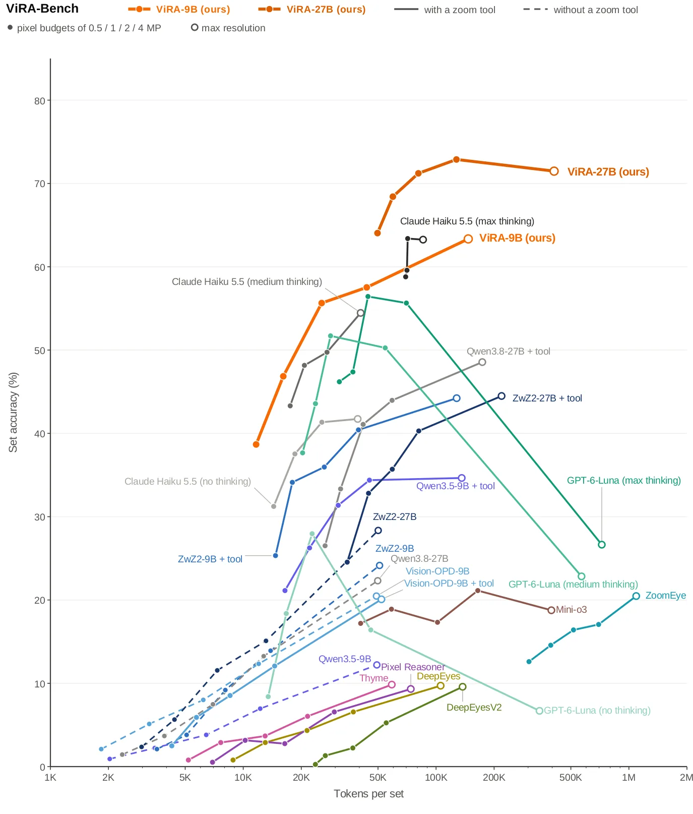

O problema do 'acerto vazio' em alta resolução
A resolução das câmeras modernas cresceu exponencialmente, produzindo fotos de 21 a 120 megapixels (MP). No entanto, a informação crucial para responder a perguntas sobre essas imagens muitas vezes reside em detalhes de apenas algumas dezenas de pixels. Um exemplo clássico é identificar o objeto que uma pessoa segura a metros de distância. Modelos de visão e linguagem (VLMs) tradicionais têm limites rígidos de entrada. Para processar uma foto de 45 MP, um modelo como o Qwen3.5 precisaria de cerca de 44.000 tokens, o que excede a capacidade de memória e processamento padrão.
Para contornar isso, os sistemas atuais comprimem a imagem, reduzindo a resolução global. O problema é que o detalhe importante encolhe junto com o resto da foto, tornando-se ilegível. Em uma redução de 45 MP para 3,8 MP (o limite do Claude Haiku 5.5), um objeto de 50 pixels torna-se apenas 15 pixels. Para recuperar esses detalhes, surgiram os 'agentes visuais', que não olham a foto inteira de uma vez, mas sim fazem zoom em regiões específicas que consideram relevantes.
Aqui reside a falha crítica: a capacidade de fazer zoom não garante que o modelo leu a evidência. Em muitos casos, o modelo acerta a resposta usando senso comum, não leitura visual. Por exemplo, se uma pessoa levanta um objeto pequeno na direção da câmera, o modelo pode assumir, por probabilidade estatística, que é um smartphone, mesmo sem ler o que está escrito ou a forma exata do objeto. Se a pergunta for alterada para que a resposta correta seja 'calculadora' ou 'controle remoto', o modelo que usa senso comum ainda responderá 'smartphone', acertando por engano em uma versão, mas falhando na lógica de leitura.

Por que o Reinforcement Learning tradicional falha
Os agentes visuais atuais são treinados usando Reinforcement Learning (RL) na resposta final, frequentemente com algoritmos como o Group Relative Policy Optimization (GRPO). O problema fundamental dessa abordagem é que, em uma única imagem, um palpite correto (guess) recebe a mesma recompensa de uma leitura correta (reading). Se o modelo adivinha 'smartphone' e está certo, ele é recompensado. Se ele faz zoom, lê 'smartphone' e está certo, também é recompensado.
Como o palpite é computacionalmente mais barato (não requer zoom) e estatisticamente provável, o modelo aprende uma 'atalho' (shortcut). Ele para de usar a ferramenta de zoom ou ignora o que vê nela, confiando apenas no prior do modelo de linguagem. Métodos recentes tentam recompensar o ato de chamar a ferramenta de zoom ou cobrir a região de evidência, mas isso incentiva o modelo a 'fingir' que olhou, sem necessariamente processar a informação visual. O modelo pode chamar o zoom, olhar para a região, mas ainda assim responder baseado no contexto geral ou no senso comum, como visto em casos onde o modelo afirma que a imagem ampliada confirma algo que não está lá.
Para distinguir entre 'ler' e 'adivinhar', precisamos de um cenário onde o senso comum leve a respostas erradas. Isso só é possível se houver variação na evidência visual enquanto a pergunta permanece a mesma. É aqui que entra a proposta do paper: usar conjuntos de contraste (contrast sets) para treinar o agente.
A ideia central: Conjuntos de Contraste e CrossRPO
O paper propõe o Cross-Input Relative Policy Optimization (CrossRPO). A ideia é criar conjuntos de contraste: grupos de imagens que são idênticas exceto por uma pequena região que contém a evidência da resposta. Nessas regiões, um pequeno objeto é editado ou fotografado de forma diferente, alterando a resposta correta para a mesma pergunta.
Considere o exemplo da Figura 1a: três versões de uma foto de rua de 45 MP. Em todas, uma mulher levanta a mão. Na versão A, ela segura um smartphone; na B, uma calculadora; na C, um controle remoto. A pergunta é 'O que ela está segurando?'. Um modelo que usa senso comum responderá 'smartphone' para todas as três. Isso significa que ele acerta apenas uma das três versões do conjunto. Para acertar o conjunto inteiro (set accuracy), o modelo é obrigado a ler a evidência visual em cada versão específica.
O algoritmo CrossRPO treina o agente recompensando-o apenas se ele acertar todas as versões do conjunto. Se ele falhar em uma única versão, a recompensa total é zero ou drasticamente reduzida. Isso elimina a possibilidade de ganhar pontos apenas adivinhando. O modelo aprende que a estratégia de 'palpite global' é insustentável, forçando-o a desenvolver a habilidade de zoom preciso e leitura de texto ou detalhes visuais minúsculos.

Como o CrossRPO funciona matematicamente
O núcleo do método é a função de perda e a estimativa de vantagem. No GRPO padrão, a vantagem é calculada comparando as ações do modelo em diferentes rollouts da mesma imagem. Isso não separa leitura de palpite. O CrossRPO introduz um termo 'joint' (conjunto) que compara as performances em todas as combinações de versões dentro de um conjunto de contraste.
A fórmula do CrossRPO inclui um parâmetro lambda (λ) que balanceia a recompensa padrão (baseada na versão individual) e a recompensa cruzada (baseada no conjunto inteiro). A vantagem é calculada de forma não enviesada, usando uma abordagem 'leave-one-out' dentro de cada versão e combinando estatísticas de todo o batch. Isso reduz a variância da estimativa de gradiente, permitindo um treinamento mais estável mesmo com conjuntos pequenos.
Uma propriedade teórica importante provada no paper é que, para um conjunto de K versões, a probabilidade de um modelo 'cego' (que não lê a evidência) acertar todas as versões cai exponencialmente com K. Para K=3, a chance é limitada a 1/3 se as respostas forem diferentes. O CrossRPO explora isso: ele penaliza fortemente qualquer política que não se ajuste à variação específica de cada versão. O modelo é forçado a aprender uma função de política que mapeia a evidência visual específica para a resposta correta, em vez de mapear o contexto geral para a resposta mais provável.
Construção dos Dados: ViRA-Train e ViRA-Bench
Para treinar e avaliar o modelo, os autores criaram dois conjuntos de dados principais. O ViRA-Train consiste em 9.261 conjuntos de contraste gerados por edição de imagens reais de 21 a 120 MP. Eles editam um pequeno objeto na cena, alterando a resposta correta. Isso permite um grande volume de dados de treinamento variados.
Para avaliação, criaram o ViRA-Bench, que também usa imagens editadas, mas com um protocolo rigoroso para garantir que o modelo não use artefatos da edição (como bordas estranhas ou diferenças de iluminação) como atalho. Além disso, criaram o ViRA-Bench-Real, um conjunto menor (78 conjuntos) de imagens fotografadas realmente, onde objetos foram alterados fisicamente ou em cenários controlados. Isso serve para verificar se o modelo generaliza para mudanças reais, não apenas para edições digitais.
Cada conjunto de contraste tem de 2 a 3 versões. As perguntas incluem a localização aproximada do objeto para facilitar a busca inicial do agente, mas o teste final exige a leitura do conteúdo do objeto. O uso de imagens de alta resolução (até 120 MP) garante que o modelo seja testado em condições extremas de densidade de informação, onde o zoom é indispensável.
Resultados: ViRA-9B e ViRA-27B
Os autores treinaram duas versões do modelo Qwen: o ViRA-9B (baseado no Qwen3.5-9B) e o ViRA-27B (baseado no Qwen3.8-27B). O treinamento foi feito com apenas cerca de 3.500 itens do ViRA-Train para cada modelo, usando CrossRPO com λ=0.5. Os resultados são impressionantes em termos de eficiência e precisão.
No ViRA-Bench, na resolução máxima, o ViRA-9B alcançou 63,3% de precisão no conjunto (set accuracy), contra 59,3% do GRPO padrão. O ganho é ainda mais significativo quando comparado aos modelos base sem a técnica de contraste. O ViRA-27B foi ainda mais forte, superando modelos proprietários como o Claude Haiku 5.5 e o GPT-6-Luna (ambos no seu nível máximo de 'pensamento') na maioria dos benchmarks de alta resolução.
Uma métrica crucial é a eficiência de tokens. O ViRA-27B alcançou 71,5% de precisão no ViRA-Bench usando cerca de 409K tokens por conjunto, enquanto o Claude Haiku 5.5 precisou de 86K tokens para 63,3%. Isso sugere que o ViRA é mais robusto, embora use mais tokens para garantir a leitura correta. Em budgets de pixels menores (0.5 MP a 4 MP), o ViRA também lidera consistentemente, mostrando que a habilidade de zoom aprendida é transferível para diferentes restrições de resolução.

Limitações e Considerações Finais
Apesar dos avanços, o paper admite limitações importantes. Primeiro, a dependência de conjuntos de contraste. Criar esses conjuntos é mais caro e complexo do que usar imagens únicas, pois requer edição de imagem ou fotografia repetida de cenas idênticas. Isso limita a escalabilidade da geração de dados de treinamento em larga escala.
Segundo, a qualidade dos dados de avaliação. O ViRA-Bench-Real, embora livre de artefatos de edição, é pequeno (78 conjuntos) e focado em objetos internos como placas e adesivos. Não cobre cenários externos complexos ou objetos variados. Além disso, as perguntas no benchmark indicam onde o objeto está, o que facilita a busca inicial. Um teste sem essa dica seria mais rigoroso.
Terceiro, o treinamento foi feito apenas em uma família de modelos (Qwen). Não está claro se o CrossRPO funciona igualmente bem em outras arquiteturas de VLMs. Também não há incentivos no reward para que o modelo faça zooms múltiplos ou caixas delimitadoras (bounding boxes) mais apertadas; o modelo tende a fazer um único zoom amplo.
Em resumo, o ViRA apresenta uma solução elegante para um problema fundamental em agentes visuais: a distinção entre correlação estatística e leitura causal de evidências. Ao forçar o modelo a lidar com variações locais em alta resolução, o CrossRPO quebra o hábito de 'palpite por senso comum'. Embora dependa de dados sintéticos ou editados para treinamento, os resultados mostram que é possível treinar modelos abertos que competem com os melhores proprietários em tarefas de leitura visual fina, desde que o treinamento seja alinhado com a necessidade real de leitura.
O que fica
- Agentes visuais frequentemente acertam por senso comum sem ler a evidência; o ViRA resolve isso com conjuntos de contraste.
- O CrossRPO recompensa a solução correta de todo um conjunto de imagens variantes, penalizando palpites únicos.
- ViRA-27B supera Claude Haiku 5.5 e GPT-6-Luna em benchmarks de alta resolução com menos tokens.
- O método funciona em imagens de 21 a 120 MP, mas depende de conjuntos de treinamento editados ou fotografados especificamente.
Paper original: ViRA: Toward Ultra-High-Resolution Visual Agents via Cross-Input Relative Policy Optimization
Comentários
Nenhum comentário ainda. Seja o primeiro.